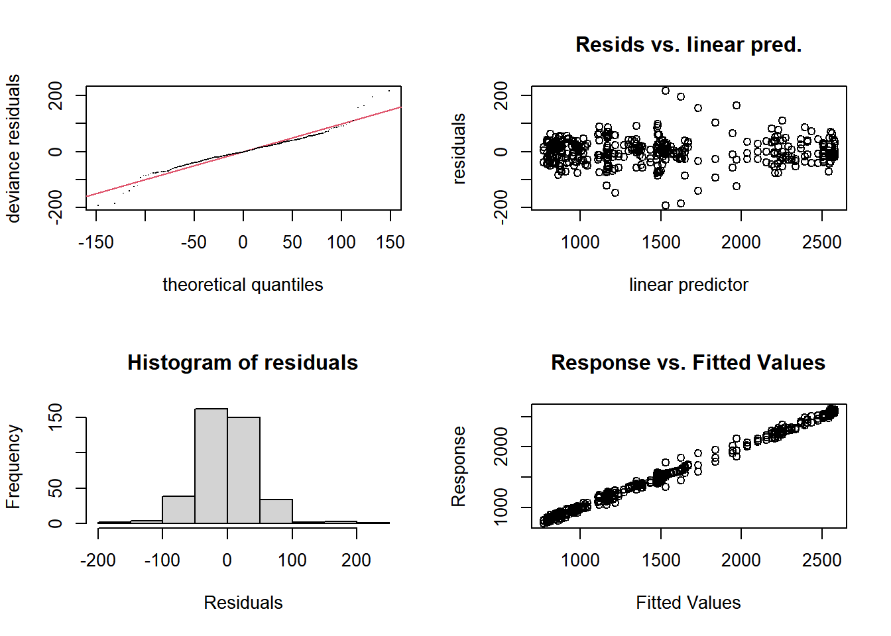
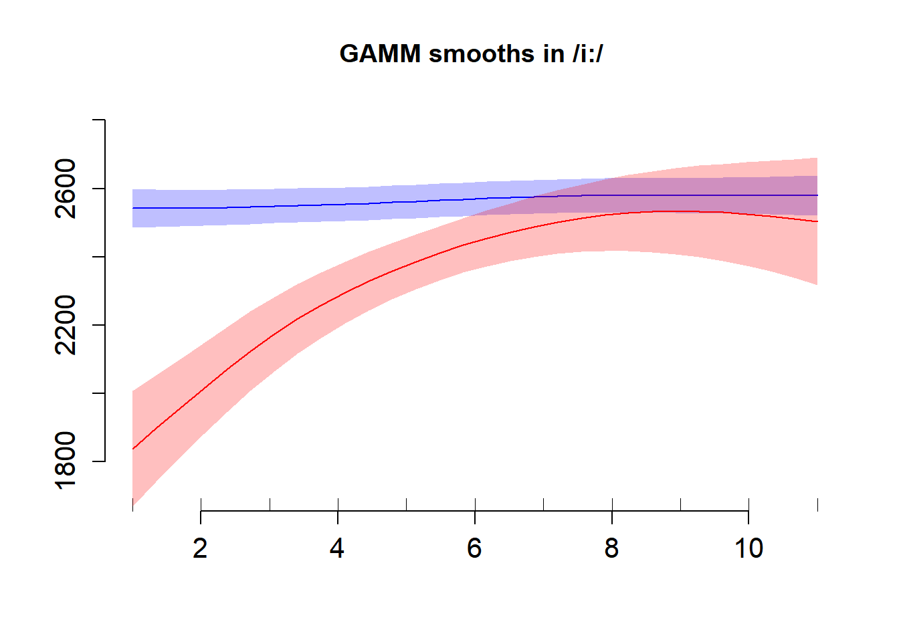
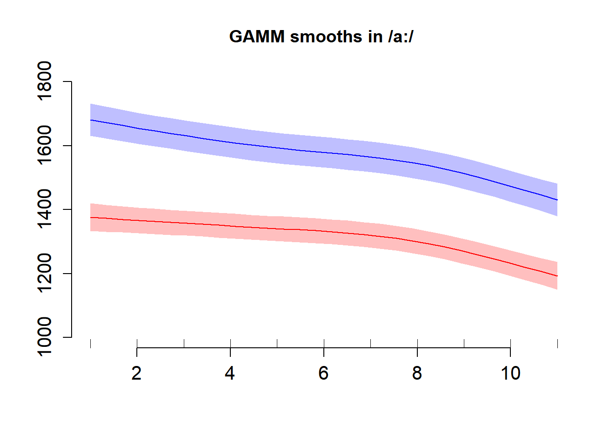
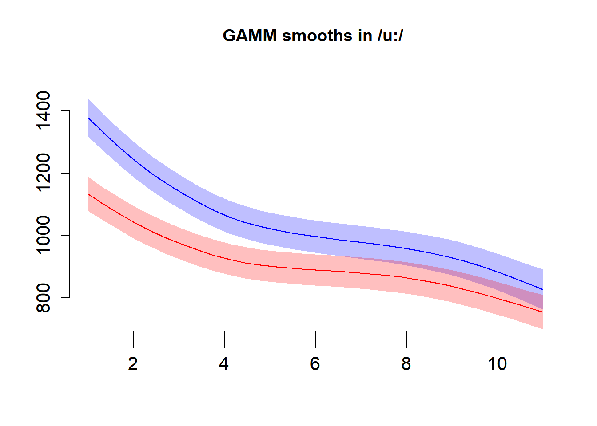
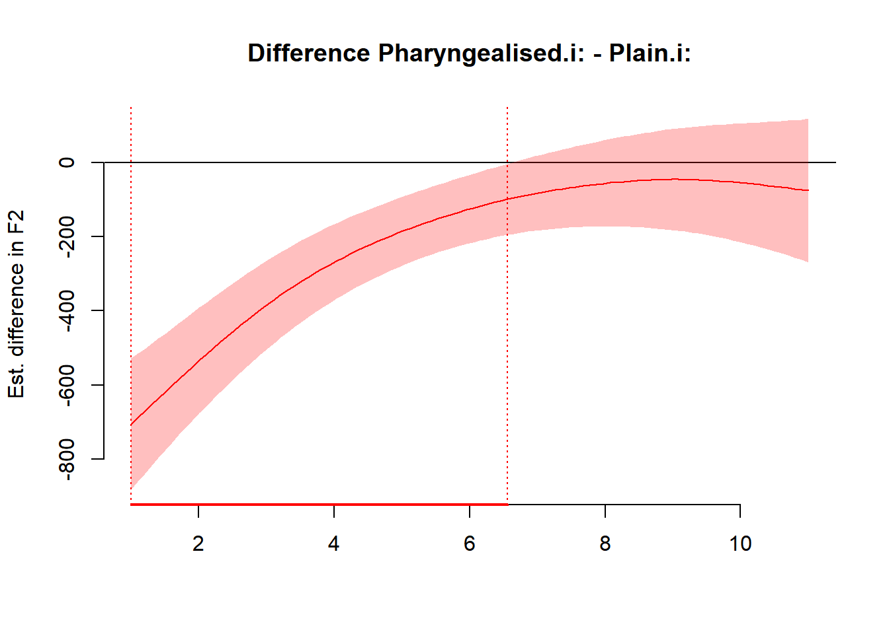
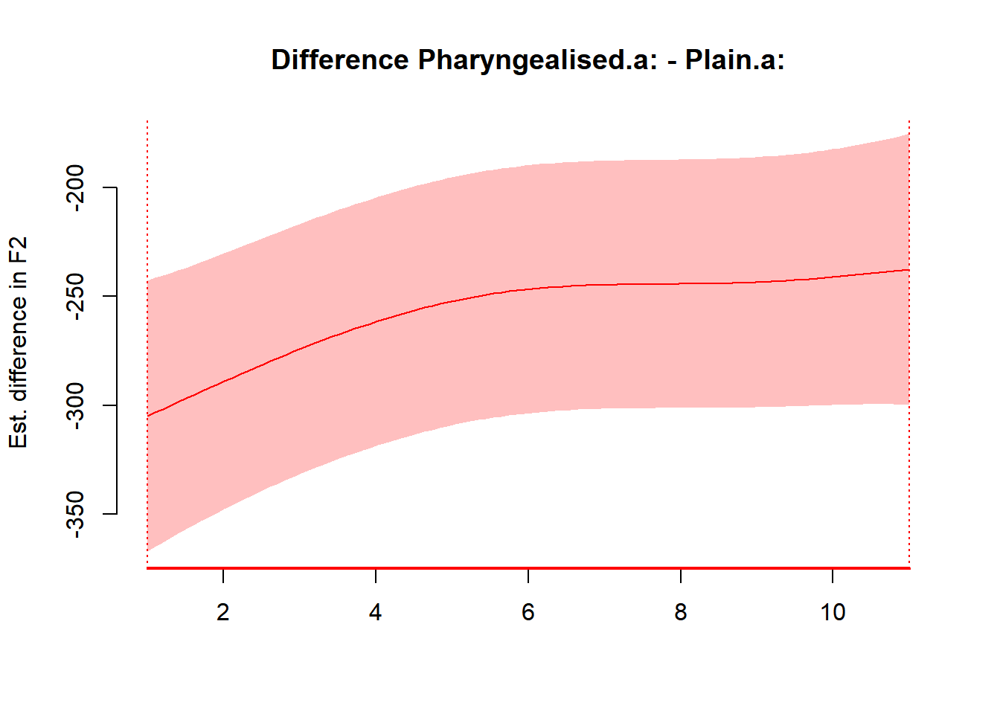
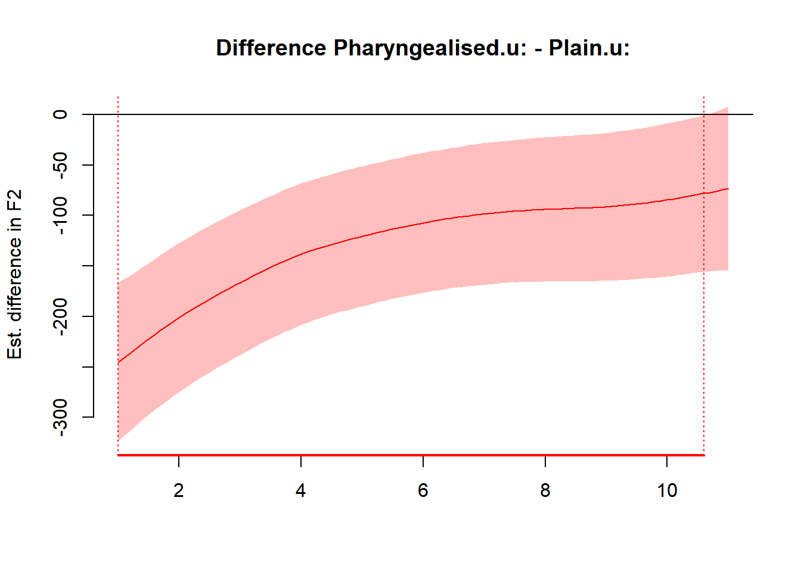

4.6 Generalised Additive Mixed-effects Models (GAMMs)
Generalised Additive Mixed-effects Models (GAMMs) are currently used for dynamic data. By dynamic data we mean, where the “time” component is accounted for. These can be vowel formants or f0 obtained at 11 intervals; dynamic tongue contours obtained at multiple time points, etc.
We first use GAMMs (with random effects) to demonstrate its usage
4.6.1 Loading dataframe
## # A tibble: 10 × 19
## Speaker Sex Word repetition context vowel Label Duration F2_01 F2_02 F2_03
## <chr> <chr> <chr> <chr> <chr> <chr> <chr> <dbl> <dbl> <dbl> <dbl>
## 1 SP01 Male 2aat… rep01 Plain a: V2 176. 1500. 1526. 1498.
## 2 SP01 Male 2aat… rep02 Plain a: V2 143. 1518. 1520. 1512.
## 3 SP01 Male 2aat… rep03 Plain a: V2 108. 1539. 1553. 1556.
## 4 SP01 Male 2aaT… rep01 Pharyn… a: V2 145. 1046. 1107. 1127.
## 5 SP01 Male 2aaT… rep02 Pharyn… a: V2 141. 1229. 1242. 1261.
## 6 SP01 Male 2aaT… rep03 Pharyn… a: V2 108. 1156. 1165. 1171.
## 7 SP01 Male 2iit… rep01 Plain i: V2 184. 2269. 2244. 2281.
## 8 SP01 Male 2iit… rep02 Plain i: V2 192. 2218. 2197. 2219.
## 9 SP01 Male 2iit… rep03 Plain i: V2 172. 2140. 2152. 2182.
## 10 SP01 Male 2iiT… rep01 Pharyn… i: V2 212. 1337. 1442. 1592.
## # ℹ 8 more variables: F2_04 <dbl>, F2_05 <dbl>, F2_06 <dbl>, F2_07 <dbl>,
## # F2_08 <dbl>, F2_09 <dbl>, F2_10 <dbl>, F2_11 <dbl>The dataframe was extracted from a Praat script and comes in a wide format. For it to work properly with GAMMs, we convert it to a long format
4.6.2 Manipulation
4.6.2.1 Wide to Long format
dynamicDF <- dynamicDF %>%
pivot_longer(-c(1:8),
names_sep = "_",
names_to = c("Correlate", "Interval"),
values_to = "Vals",
names_repair = "minimal") %>%
pivot_wider(names_from = "Correlate",
values_from = "Vals") %>%
unnest()
dynamicDF %>%
head(10)## # A tibble: 10 × 10
## Speaker Sex Word repetition context vowel Label Duration Interval F2
## <chr> <chr> <chr> <chr> <chr> <chr> <chr> <dbl> <chr> <dbl>
## 1 SP01 Male 2aataa rep01 Plain a: V2 176. 01 1500.
## 2 SP01 Male 2aataa rep01 Plain a: V2 176. 02 1526.
## 3 SP01 Male 2aataa rep01 Plain a: V2 176. 03 1498.
## 4 SP01 Male 2aataa rep01 Plain a: V2 176. 04 1462.
## 5 SP01 Male 2aataa rep01 Plain a: V2 176. 05 1433.
## 6 SP01 Male 2aataa rep01 Plain a: V2 176. 06 1421.
## 7 SP01 Male 2aataa rep01 Plain a: V2 176. 07 1419.
## 8 SP01 Male 2aataa rep01 Plain a: V2 176. 08 1411.
## 9 SP01 Male 2aataa rep01 Plain a: V2 176. 09 1401.
## 10 SP01 Male 2aataa rep01 Plain a: V2 176. 10 1428.4.6.2.2 Transforming and arranging dataframe
dynamicDF <- dynamicDF %>%
mutate(Speaker = as.factor(Speaker),
Sex = as.factor(Sex),
Word = as.factor(Word),
repetition = as.factor(repetition),
context = as.factor(context),
vowel = as.factor(vowel),
Interval = as.numeric(Interval)) %>%
arrange(Speaker, Word, context, vowel)
dynamicDF %>%
head(10)## # A tibble: 10 × 10
## Speaker Sex Word repetition context vowel Label Duration Interval F2
## <fct> <fct> <fct> <fct> <fct> <fct> <chr> <dbl> <dbl> <dbl>
## 1 SP01 Male 2aataa rep01 Plain a: V2 176. 1 1500.
## 2 SP01 Male 2aataa rep01 Plain a: V2 176. 2 1526.
## 3 SP01 Male 2aataa rep01 Plain a: V2 176. 3 1498.
## 4 SP01 Male 2aataa rep01 Plain a: V2 176. 4 1462.
## 5 SP01 Male 2aataa rep01 Plain a: V2 176. 5 1433.
## 6 SP01 Male 2aataa rep01 Plain a: V2 176. 6 1421.
## 7 SP01 Male 2aataa rep01 Plain a: V2 176. 7 1419.
## 8 SP01 Male 2aataa rep01 Plain a: V2 176. 8 1411.
## 9 SP01 Male 2aataa rep01 Plain a: V2 176. 9 1401.
## 10 SP01 Male 2aataa rep01 Plain a: V2 176. 10 1428.4.6.2.3 Ordering predictors
It is important to use an ordered predictor in GAMs. By default, GAMs provides computations similar to an ANOVA (with sum coding). Here, we use a treatment coding to allow for an increase in power. Also, we create an interaction factor; the results are to be modelled as a function of the interaction between the context and the vowel
4.6.3 Model specifications
4.6.3.1 No AR1 model
4.6.3.1.1 Model estimation
system.time(mdl.gamm.F2.noAR <- bam(F2 ~ ContVowInt.ord * Sex.ord +
### 1d smooths
s(Interval, bs = "cr", k = 11) +
### 1d smooths * factor
s(Interval, bs = "cr", k = 11, by = ContVowInt.ord) +
s(Interval, bs = "cr", k = 11, by = Sex.ord) +
### random smooths by speaker
s(Interval, Speaker, bs = "fs", k = 11, m = 1, xt=list(bs = "tp")) + s(Interval, Speaker, bs = "fs", k = 11, m = 1, xt=list(bs = "tp"), by = ContVowInt.ord) +
### random smooths by word
s(Interval, Word, bs = "fs", k = 11, m = 1, xt=list(bs = "tp")) + s(Interval, Word, bs = "fs", k = 11, m = 1, xt=list(bs = "tp"), by = Sex.ord),
data = dynamicDF, discrete = TRUE, nthreads = 2))## user system elapsed
## 1.24 0.26 1.194.6.3.1.1.2 Gam check

##
## Method: fREML Optimizer: perf chol
## $grad
## [1] -3.197442e-14 -2.717826e-13 -2.042810e-14 -1.760814e-13 1.976197e-14
## [6] 3.552714e-15 1.132427e-14 -1.967253e-06 -2.553513e-15 -3.167531e-06
## [11] 8.881784e-16 5.329071e-15 4.440892e-15 -3.165860e-06 -1.110223e-16
## [16] -1.110223e-13 -5.107026e-15 -6.195044e-14 -6.439294e-15 -2.561403e-06
## [21] 1.332268e-15 -3.476698e-06 -6.661338e-15 1.610374e-10
##
## $hess
## [,1] [,2] [,3] [,4] [,5]
## 1.003880e+00 -9.361499e-02 9.867539e-03 -1.773653e-01 1.813204e-02
## -9.361499e-02 1.638108e-01 2.307914e-02 -6.348586e-02 -4.914258e-02
## 9.867539e-03 2.307914e-02 1.193923e+00 1.370215e-02 2.170922e-02
## -1.773653e-01 -6.348586e-02 1.370215e-02 3.473970e-01 -4.569094e-03
## 1.813204e-02 -4.914258e-02 2.170922e-02 -4.569094e-03 1.105819e+00
## 1.869996e-02 -4.161598e-02 1.925866e-02 -1.293336e-03 -5.549452e-02
## -2.506757e-01 -9.568044e-03 2.012076e-03 3.342137e-02 -3.534940e-02
## 1.835864e-06 -2.041012e-08 -6.795749e-08 -4.024643e-07 2.384429e-07
## -2.730578e-27 -6.756815e-29 8.193394e-28 -6.226779e-28 -1.634415e-28
## 4.388010e-08 2.222766e-07 2.794168e-08 -5.336235e-08 -8.684646e-08
## 9.693161e-29 -1.761694e-28 -5.650937e-30 1.941036e-29 1.500761e-29
## -2.094426e-02 -3.873479e-03 6.382315e-02 4.224116e-03 -8.042748e-03
## -2.162922e-29 7.500641e-30 2.859547e-28 -3.748008e-30 5.800040e-30
## 2.724867e-08 -2.343219e-08 2.858970e-09 1.451438e-07 2.394565e-08
## -2.261934e-28 1.530476e-28 -9.640589e-30 -4.665672e-28 7.628354e-29
## -2.111491e-02 5.202241e-03 -8.566203e-04 1.013440e-03 7.873933e-02
## 1.053291e-29 -4.541828e-30 -1.572611e-30 7.415223e-31 7.794641e-29
## -2.067744e-02 3.927096e-03 -9.736665e-04 7.681664e-04 3.362567e-03
## -1.553246e-30 -9.641952e-31 -9.931864e-31 1.288670e-30 7.046425e-32
## 1.666934e-06 1.956228e-06 -3.382783e-07 1.774858e-06 7.445482e-07
## -5.594164e-27 -5.564185e-27 3.659382e-27 -4.671394e-27 -2.151430e-27
## 3.217140e-08 1.535342e-07 -5.404928e-08 2.378842e-07 -1.894141e-07
## -3.240826e-28 -3.739453e-28 2.584415e-28 -8.183831e-28 -7.830517e-29
## d -1.050806e+00 -3.614705e-01 -1.228224e+00 -5.976267e-01 -1.231656e+00
## [,6] [,7] [,8] [,9] [,10]
## 1.869996e-02 -2.506757e-01 1.835864e-06 -2.901173e-27 4.388010e-08
## -4.161598e-02 -9.568044e-03 -2.041012e-08 -8.780368e-29 2.222766e-07
## 1.925866e-02 2.012076e-03 -6.795749e-08 3.489766e-28 2.794168e-08
## -1.293336e-03 3.342137e-02 -4.024643e-07 -6.408959e-28 -5.336235e-08
## -5.549452e-02 -3.534940e-02 2.384429e-07 -2.515398e-28 -8.684646e-08
## 1.608696e+00 -3.333043e-02 1.906263e-07 -4.690757e-28 -7.452219e-08
## -3.333043e-02 7.405700e-01 2.946194e-06 -6.535006e-28 7.542137e-08
## 1.906263e-07 2.946194e-06 1.967272e-06 1.266704e-32 8.682268e-13
## -4.945848e-28 -6.192442e-28 1.183267e-32 2.553513e-15 1.990942e-33
## -7.452219e-08 7.542137e-08 8.682268e-13 -4.773871e-34 3.167528e-06
## 1.254846e-29 3.595956e-29 -4.385281e-34 -5.456039e-30 2.103533e-33
## -7.722929e-03 -1.301421e-01 -1.302448e-06 1.108195e-27 9.333260e-08
## 1.033146e-29 3.216104e-29 -3.800040e-35 -1.533357e-29 1.144946e-34
## 2.308512e-08 2.387087e-07 -2.472654e-14 -1.109391e-33 -1.729391e-12
## 5.574158e-29 8.955897e-30 7.140931e-34 -2.047134e-29 3.381071e-33
## 3.106205e-03 4.813115e-02 7.265923e-07 1.074583e-27 2.598147e-07
## 2.375362e-31 -5.368325e-30 2.524986e-35 -4.333108e-30 -8.118414e-35
## 3.593009e-02 1.859382e-02 2.987398e-07 3.229019e-28 5.042282e-07
## 2.631607e-29 -3.613058e-30 6.840752e-35 -3.312588e-30 -1.654635e-35
## 4.889666e-07 -2.577409e-07 1.250788e-12 1.107362e-32 2.557888e-12
## -1.999660e-27 -8.026339e-28 -1.731001e-33 -6.181632e-29 1.847844e-34
## -1.251857e-07 8.775859e-08 2.813470e-13 3.039944e-34 -1.753342e-12
## -2.091530e-28 -2.551649e-28 -1.354550e-33 -2.902629e-29 -3.446669e-34
## d -1.564357e+00 -1.031287e+00 -8.032182e-06 -9.425570e-24 -2.306632e-06
## [,11] [,12] [,13] [,14] [,15]
## 9.963755e-29 -2.094426e-02 -2.790592e-29 2.724867e-08 -2.248571e-28
## -1.705466e-28 -3.873479e-03 4.982743e-30 -2.343219e-08 1.510254e-28
## -6.311658e-30 6.382315e-02 1.674089e-28 2.858970e-09 -9.951013e-30
## 1.924186e-29 4.224116e-03 -8.494566e-30 1.451438e-07 -4.646620e-28
## 1.561495e-29 -8.042748e-03 6.935882e-30 2.394565e-08 7.518078e-29
## 1.261533e-29 -7.722929e-03 3.971410e-30 2.308512e-08 5.476712e-29
## 3.644381e-29 -1.301421e-01 2.610475e-29 2.387087e-07 2.932461e-30
## -6.551478e-34 -1.302448e-06 -1.395738e-34 -2.472654e-14 8.851660e-34
## -5.456039e-30 1.060046e-27 -1.533357e-29 -1.632496e-33 -2.047134e-29
## 1.949499e-33 9.333260e-08 3.717677e-35 -1.729391e-12 3.328055e-33
## -6.661338e-16 -3.945992e-29 -8.231077e-34 -2.092597e-34 -1.356658e-35
## -4.014206e-29 5.713580e+00 2.122227e-28 -1.406852e-07 1.487500e-28
## -8.231077e-34 2.531269e-28 -4.662937e-15 1.118899e-35 -1.964088e-35
## -2.076291e-34 -1.406852e-07 -4.950595e-36 3.165853e-06 -2.821366e-33
## -1.356658e-35 1.588115e-28 -1.964088e-35 -2.547836e-33 1.110223e-16
## 1.668849e-28 7.439112e-02 -1.366255e-29 1.100026e-07 -6.271786e-28
## -5.042019e-35 -4.332341e-30 -5.848313e-34 -1.607665e-35 -7.637864e-34
## 1.919109e-28 3.620299e-02 -9.014722e-30 3.157134e-08 -6.962854e-28
## -1.592668e-35 2.977759e-30 -6.033908e-35 1.439979e-35 -2.218691e-34
## -1.587002e-33 -2.180195e-07 -7.178574e-35 9.876859e-13 -1.466288e-33
## -3.842188e-29 9.107497e-29 -9.621897e-30 -1.724096e-33 -1.765279e-29
## 9.237031e-34 1.061986e-07 7.894592e-36 -3.065580e-12 9.212337e-35
## -1.467374e-29 7.729009e-28 -2.367519e-30 -3.154249e-33 -6.113924e-29
## d -4.503816e-26 -6.080384e+00 -9.293502e-25 -1.694360e-06 -7.649261e-25
## [,16] [,17] [,18] [,19] [,20]
## -2.111491e-02 7.921045e-30 -2.067744e-02 4.461691e-31 1.666934e-06
## 5.202241e-03 -6.041730e-30 3.927096e-03 -1.520265e-30 1.956228e-06
## -8.566203e-04 -1.475335e-30 -9.736665e-04 -1.000132e-30 -3.382783e-07
## 1.013440e-03 -5.363083e-31 7.681664e-04 7.712075e-31 1.774858e-06
## 7.873933e-02 6.900138e-29 3.362567e-03 1.167471e-31 7.445482e-07
## 3.106205e-03 -7.618732e-33 3.593009e-02 2.767466e-29 4.889666e-07
## 4.813115e-02 -6.729529e-30 1.859382e-02 -3.981380e-30 -2.577409e-07
## 7.265923e-07 8.754422e-35 2.987398e-07 3.195273e-35 1.250788e-12
## 1.304289e-27 -4.333108e-30 2.774213e-28 -3.312588e-30 5.580084e-33
## 2.598147e-07 -5.164212e-35 5.042282e-07 -9.255486e-36 2.557888e-12
## 1.641776e-28 -5.042019e-35 1.883513e-28 -1.592668e-35 -1.596458e-33
## 7.439112e-02 -3.368927e-30 3.620299e-02 3.623521e-30 -2.180195e-07
## -8.966407e-30 -5.848313e-34 -1.760296e-29 -6.033908e-35 7.933611e-36
## 1.100026e-07 -1.362678e-35 3.157134e-08 1.552336e-35 9.876859e-13
## -6.779262e-28 -7.637864e-34 -7.022423e-28 -2.218691e-34 -5.540741e-34
## 9.728958e-01 -1.787055e-28 -1.056477e-01 -3.262309e-30 -1.796839e-07
## -1.900524e-28 5.218048e-15 1.477781e-29 -2.428310e-34 2.961089e-35
## -1.056477e-01 1.074100e-29 1.681829e+00 5.621969e-29 -1.688652e-07
## -5.007378e-30 -2.428310e-34 4.323387e-29 6.439294e-15 -1.436057e-35
## -1.796839e-07 1.140911e-35 -1.688652e-07 -7.370104e-36 2.561441e-06
## 2.397782e-28 -6.577979e-30 2.935087e-28 -5.194243e-29 -8.874990e-32
## 3.614614e-07 -1.283231e-34 6.800200e-07 4.467465e-35 2.983844e-12
## -7.477437e-28 -2.758765e-29 -8.403796e-28 -1.958260e-29 -1.612945e-32
## d -1.725493e+00 -1.430855e-26 -1.827487e+00 -9.258074e-27 -1.206302e-05
## [,21] [,22] [,23] [,24]
## -5.804970e-27 3.217140e-08 -3.135621e-28 -1.050806e+00
## -5.413711e-27 1.535342e-07 -3.089810e-28 -3.614705e-01
## 1.199695e-27 -5.404928e-08 3.960844e-28 -1.228224e+00
## -4.757450e-27 2.378842e-07 -8.173344e-28 -5.976267e-01
## -2.151895e-27 -1.894141e-07 -9.844908e-29 -1.231656e+00
## -1.719631e-27 -1.251857e-07 -1.116546e-28 -1.564357e+00
## -9.610266e-28 8.775859e-08 -2.566855e-28 -1.031287e+00
## -2.257838e-33 2.813470e-13 4.615262e-34 -8.032182e-06
## -6.181632e-29 6.883788e-34 -2.902629e-29 -9.425570e-24
## -8.141127e-33 -1.753342e-12 -1.549712e-33 -2.306632e-06
## -3.842188e-29 8.859451e-34 -1.467374e-29 -4.503816e-26
## -2.860253e-28 1.061986e-07 3.589715e-28 -6.080384e+00
## -9.621897e-30 -2.119291e-35 -2.367519e-30 -9.293502e-25
## -5.320247e-34 -3.065580e-12 -3.132259e-33 -1.694360e-06
## -1.765279e-29 2.866126e-34 -6.113924e-29 -7.649261e-25
## 3.006186e-28 3.614614e-07 -6.347548e-28 -1.725493e+00
## -6.577979e-30 -1.108896e-34 -2.758765e-29 -1.430855e-26
## 7.132233e-29 6.800200e-07 -7.400983e-28 -1.827487e+00
## -5.194243e-29 1.232255e-35 -1.958260e-29 -9.258074e-27
## -8.253479e-32 2.983844e-12 -1.585811e-32 -1.206302e-05
## -1.332268e-15 -6.195006e-33 -7.863392e-29 -2.514588e-23
## -9.074055e-33 3.476696e-06 -2.481320e-33 -2.851468e-06
## -7.863392e-29 -1.859022e-33 6.661338e-15 -2.848608e-24
## d -2.514588e-23 -2.851468e-06 -2.848608e-24 1.885000e+02
##
## Model rank = 346 / 346
##
## Basis dimension (k) checking results. Low p-value (k-index<1) may
## indicate that k is too low, especially if edf is close to k'.
##
## k' edf k-index
## s(Interval) 1.00e+01 3.10e+00 1.29
## s(Interval):ContVowInt.ordPlain.a: 1.00e+01 1.72e+00 1.29
## s(Interval):ContVowInt.ordPharyngealised.i: 1.00e+01 3.46e+00 1.29
## s(Interval):ContVowInt.ordPlain.i: 1.00e+01 2.20e+00 1.29
## s(Interval):ContVowInt.ordPharyngealised.u: 1.00e+01 3.46e+00 1.29
## s(Interval):ContVowInt.ordPlain.u: 1.00e+01 4.13e+00 1.29
## s(Interval):Sex.ordMale 1.00e+01 3.06e+00 1.29
## s(Interval,Speaker) 2.20e+01 2.00e-05 1.29
## s(Interval,Speaker):ContVowInt.ordPlain.a: 2.20e+01 1.10e-05 1.29
## s(Interval,Speaker):ContVowInt.ordPharyngealised.i: 2.20e+01 1.22e+01 1.29
## s(Interval,Speaker):ContVowInt.ordPlain.i: 2.20e+01 9.72e-06 1.29
## s(Interval,Speaker):ContVowInt.ordPharyngealised.u: 2.20e+01 3.45e+00 1.29
## s(Interval,Speaker):ContVowInt.ordPlain.u: 2.20e+01 3.65e+00 1.29
## s(Interval,Word) 6.60e+01 2.92e-05 1.29
## s(Interval,Word):Sex.ordMale 6.60e+01 1.27e-05 1.29
## p-value
## s(Interval) 1
## s(Interval):ContVowInt.ordPlain.a: 1
## s(Interval):ContVowInt.ordPharyngealised.i: 1
## s(Interval):ContVowInt.ordPlain.i: 1
## s(Interval):ContVowInt.ordPharyngealised.u: 1
## s(Interval):ContVowInt.ordPlain.u: 1
## s(Interval):Sex.ordMale 1
## s(Interval,Speaker) 1
## s(Interval,Speaker):ContVowInt.ordPlain.a: 1
## s(Interval,Speaker):ContVowInt.ordPharyngealised.i: 1
## s(Interval,Speaker):ContVowInt.ordPlain.i: 1
## s(Interval,Speaker):ContVowInt.ordPharyngealised.u: 1
## s(Interval,Speaker):ContVowInt.ordPlain.u: 1
## s(Interval,Word) 1
## s(Interval,Word):Sex.ordMale 14.6.3.2 AR1 model
4.6.3.2.0.1 Model estimation
system.time(mdl.gamm.F2.AR <- bam(F2 ~ ContVowInt.ord * Sex.ord +
### 1d smooths
s(Interval, bs = "cr", k = 11) +
### 1d smooths * factor
s(Interval, bs = "cr", k = 11, by = ContVowInt.ord) +
s(Interval, bs = "cr", k = 11, by = Sex.ord) +
### random smooths by speaker
s(Interval, Speaker, bs = "fs", k = 11, m = 1, xt=list(bs = "tp")) + s(Interval, Speaker, bs = "fs", k = 11, m = 1, xt=list(bs = "tp"), by = ContVowInt.ord) +
### random smooths by word
s(Interval, Word, bs = "fs", k = 11, m = 1, xt=list(bs = "tp")) + s(Interval, Word, bs = "fs", k = 11, m = 1, xt=list(bs = "tp"), by = Sex.ord), data = dynamicDF, discrete = TRUE, nthreads = 2, AR.start = dynamicDF$start, rho = rho_est))## user system elapsed
## 1.18 0.35 1.374.6.3.2.0.3 Summary
Family: gaussian Link function: identity
Formula: F2 ~ ContVowInt.ord * Sex.ord + s(Interval, bs = “cr”, k = 11) + s(Interval, bs = “cr”, k = 11, by = ContVowInt.ord) + s(Interval, bs = “cr”, k = 11, by = Sex.ord) + s(Interval, Speaker, bs = “fs”, k = 11, m = 1, xt = list(bs = “tp”)) + s(Interval, Speaker, bs = “fs”, k = 11, m = 1, xt = list(bs = “tp”), by = ContVowInt.ord) + s(Interval, Word, bs = “fs”, k = 11, m = 1, xt = list(bs = “tp”)) + s(Interval, Word, bs = “fs”, k = 11, m = 1, xt = list(bs = “tp”), by = Sex.ord)
Parametric coefficients:
Estimate Std. Error t value
(Intercept) 1318.57 17.74 74.322
ContVowInt.ordPlain.a: 259.70 27.35 9.496
ContVowInt.ordPharyngealised.i: 999.04 27.59 36.204
ContVowInt.ordPlain.i: 1244.99 27.44 45.364
ContVowInt.ordPharyngealised.u: -399.49 27.45 -14.553
ContVowInt.ordPlain.u: -266.02 27.50 -9.673
Sex.ordMale -147.62 24.95 -5.916
ContVowInt.ordPlain.a::Sex.ordMale 70.77 38.41 1.842
ContVowInt.ordPharyngealised.i::Sex.ordMale -226.37 38.93 -5.815
ContVowInt.ordPlain.i::Sex.ordMale -135.40 38.59 -3.509
ContVowInt.ordPharyngealised.u::Sex.ordMale 78.25 38.52 2.031
ContVowInt.ordPlain.u::Sex.ordMale 42.06 38.66 1.088
Pr(>|t|)
(Intercept) < 2e-16
ContVowInt.ordPlain.a: < 2e-16
ContVowInt.ordPharyngealised.i: < 2e-16
ContVowInt.ordPlain.i: < 2e-16
ContVowInt.ordPharyngealised.u: < 2e-16
ContVowInt.ordPlain.u: < 2e-16
Sex.ordMale 8.34e-09
ContVowInt.ordPlain.a::Sex.ordMale 0.066332 .
ContVowInt.ordPharyngealised.i::Sex.ordMale 1.44e-08
ContVowInt.ordPlain.i::Sex.ordMale 0.000513 **
ContVowInt.ordPharyngealised.u::Sex.ordMale 0.043038
ContVowInt.ordPlain.u::Sex.ordMale 0.277405
—
Signif. codes: 0 ‘’ 0.001 ’’ 0.01 ’’ 0.05 ‘.’ 0.1 ’ ’ 1
Approximate significance of smooth terms:
edf Ref.df F
s(Interval) 4.524e+00 5.638 12.737
s(Interval):ContVowInt.ordPlain.a: 2.434e+00 3.185 2.310
s(Interval):ContVowInt.ordPharyngealised.i: 3.507e+00 3.582 11.934
s(Interval):ContVowInt.ordPlain.i: 2.884e+00 3.567 10.334
s(Interval):ContVowInt.ordPharyngealised.u: 5.193e+00 6.419 10.664
s(Interval):ContVowInt.ordPlain.u: 5.735e+00 6.684 19.337
s(Interval):Sex.ordMale 5.009e+00 6.197 14.079
s(Interval,Speaker) 1.242e-05 18.000 0.000
s(Interval,Speaker):ContVowInt.ordPlain.a: 7.557e-06 21.000 0.000
s(Interval,Speaker):ContVowInt.ordPharyngealised.i: 1.547e+01 19.000 13.759
s(Interval,Speaker):ContVowInt.ordPlain.i: 4.679e+00 19.000 0.332
s(Interval,Speaker):ContVowInt.ordPharyngealised.u: 2.548e+00 19.000 0.164
s(Interval,Speaker):ContVowInt.ordPlain.u: 5.691e+00 19.000 0.573
s(Interval,Word) 1.378e-05 60.000 0.000
s(Interval,Word):Sex.ordMale 1.132e-05 62.000 0.000
p-value
s(Interval) < 2e-16
s(Interval):ContVowInt.ordPlain.a: 0.0661 .
s(Interval):ContVowInt.ordPharyngealised.i: < 2e-16
s(Interval):ContVowInt.ordPlain.i: 7.13e-07
s(Interval):ContVowInt.ordPharyngealised.u: < 2e-16
s(Interval):ContVowInt.ordPlain.u: < 2e-16
s(Interval):Sex.ordMale < 2e-16
s(Interval,Speaker) 0.2584
s(Interval,Speaker):ContVowInt.ordPlain.a: 0.8747
s(Interval,Speaker):ContVowInt.ordPharyngealised.i: < 2e-16 *
s(Interval,Speaker):ContVowInt.ordPlain.i: 0.0910 .
s(Interval,Speaker):ContVowInt.ordPharyngealised.u: 0.1405
s(Interval,Speaker):ContVowInt.ordPlain.u: 0.0073
s(Interval,Word) 0.7046
s(Interval,Word):Sex.ordMale 0.5256
—
Signif. codes: 0 ‘’ 0.001 ’’ 0.01 ’’ 0.05 ‘.’ 0.1 ’ ’ 1
R-sq.(adj) = 0.993 Deviance explained = 99.4% fREML = 1856.4 Scale est. = 1469.1 n = 396

4.6.4 Significance testing second Autoregressive GAM
To test for significance of context, we run a model with a ML as method and evaluate significance through a maximum likelihood estimate.
4.6.4.1 Models
We run two models
- A full model with all predictors (mdl.gamm.F2.AR.ML)
- A reduced model without any terms associated with the predictor “context” (mdl.gamm.F2.AR.Min.ContVowInt.ord.ML)
- An intercept only model (=Null) without any terms associated with the predictor “vowel” (mdl.gamm.F2.AR.Min.ContVowInt.ord.Sex.ord.ML)
4.6.4.1.1 Full Model
system.time(mdl.gamm.F2.AR.ML <- bam(F2 ~ ContVowInt.ord * Sex.ord +
### 1d smooths
s(Interval, bs = "cr", k = 11) +
### 1d smooths * factor
s(Interval, bs = "cr", k = 11, by = ContVowInt.ord) +
s(Interval, bs = "cr", k = 11, by = Sex.ord) +
### random smooths by speaker
s(Interval, Speaker, bs = "fs", k = 11, m = 1, xt=list(bs = "tp")) + s(Interval, Speaker, bs = "fs", k = 11, m = 1, xt=list(bs = "tp"), by = ContVowInt.ord) +
### random smooths by word
s(Interval, Word, bs = "fs", k = 11, m = 1, xt=list(bs = "tp")) + s(Interval, Word, bs = "fs", k = 11, m = 1, xt=list(bs = "tp"), by = Sex.ord), data = dynamicDF, discrete = TRUE, nthreads = 2, AR.start = dynamicDF$start, rho = rho_est, method="ML"))## user system elapsed
## 77.12 14.67 47.984.6.4.1.2 Model 2 (without ConVowelInt.ord)
system.time(mdl.gamm.F2.AR.Min.ContVowInt.ord.ML <- bam(F2 ~ Sex.ord +
### 1d smooths
s(Interval, bs = "cr", k = 11) +
### 1d smooths * factor
s(Interval, bs = "cr", k = 11, by = Sex.ord) +
### random smooths by speaker
s(Interval, Speaker, bs = "fs", k = 11, m = 1, xt=list(bs = "tp")) +
### random smooths by word
s(Interval, Word, bs = "fs", k = 11, m = 1, xt=list(bs = "tp")) + s(Interval, Word, bs = "fs", k = 11, m = 1, xt=list(bs = "tp"), by = Sex.ord), data = dynamicDF, discrete = TRUE, nthreads = 2, AR.start = dynamicDF$start, rho = rho_est, method="ML"))## user system elapsed
## 11.68 3.25 11.584.6.4.1.3 Null Model
system.time(mdl.gamm.F2.AR.Min.ContVowInt.ord.Sex.ord.ML <- bam(F2 ~
### 1d smooths
s(Interval, bs = "cr", k = 11) +
### 1d smooths * factor
### random smooths by speaker
s(Interval, Speaker, bs = "fs", k = 11, m = 1, xt=list(bs = "tp")) +
### random smooths by word
s(Interval, Word, bs = "fs", k = 11, m = 1, xt=list(bs = "tp")), data = dynamicDF, discrete = TRUE, nthreads = 2, AR.start = dynamicDF$start, rho = rho_est, method="ML"))## user system elapsed
## 3.64 1.94 5.894.6.4.2 Testing significance
## mdl.gamm.F2.AR.ML: F2 ~ ContVowInt.ord * Sex.ord + s(Interval, bs = "cr", k = 11) +
## s(Interval, bs = "cr", k = 11, by = ContVowInt.ord) + s(Interval,
## bs = "cr", k = 11, by = Sex.ord) + s(Interval, Speaker, bs = "fs",
## k = 11, m = 1, xt = list(bs = "tp")) + s(Interval, Speaker,
## bs = "fs", k = 11, m = 1, xt = list(bs = "tp"), by = ContVowInt.ord) +
## s(Interval, Word, bs = "fs", k = 11, m = 1, xt = list(bs = "tp")) +
## s(Interval, Word, bs = "fs", k = 11, m = 1, xt = list(bs = "tp"),
## by = Sex.ord)
##
## mdl.gamm.F2.AR.Min.ContVowInt.ord.ML: F2 ~ Sex.ord + s(Interval, bs = "cr", k = 11) + s(Interval, bs = "cr",
## k = 11, by = Sex.ord) + s(Interval, Speaker, bs = "fs", k = 11,
## m = 1, xt = list(bs = "tp")) + s(Interval, Word, bs = "fs",
## k = 11, m = 1, xt = list(bs = "tp")) + s(Interval, Word,
## bs = "fs", k = 11, m = 1, xt = list(bs = "tp"), by = Sex.ord)
##
## Chi-square test of ML scores
## -----
## Model Score Edf Difference Df p.value
## 1 mdl.gamm.F2.AR.Min.ContVowInt.ord.ML 2082.786 12
## 2 mdl.gamm.F2.AR.ML 1930.850 42 151.936 30.000 < 2e-16
## Sig.
## 1
## 2 ***
##
## AIC difference: -57.04, model mdl.gamm.F2.AR.ML has lower AIC.## mdl.gamm.F2.AR.ML: F2 ~ ContVowInt.ord * Sex.ord + s(Interval, bs = "cr", k = 11) +
## s(Interval, bs = "cr", k = 11, by = ContVowInt.ord) + s(Interval,
## bs = "cr", k = 11, by = Sex.ord) + s(Interval, Speaker, bs = "fs",
## k = 11, m = 1, xt = list(bs = "tp")) + s(Interval, Speaker,
## bs = "fs", k = 11, m = 1, xt = list(bs = "tp"), by = ContVowInt.ord) +
## s(Interval, Word, bs = "fs", k = 11, m = 1, xt = list(bs = "tp")) +
## s(Interval, Word, bs = "fs", k = 11, m = 1, xt = list(bs = "tp"),
## by = Sex.ord)
##
## mdl.gamm.F2.AR.Min.ContVowInt.ord.Sex.ord.ML: F2 ~ s(Interval, bs = "cr", k = 11) + s(Interval, Speaker, bs = "fs",
## k = 11, m = 1, xt = list(bs = "tp")) + s(Interval, Word,
## bs = "fs", k = 11, m = 1, xt = list(bs = "tp"))
##
## Chi-square test of ML scores
## -----
## Model Score Edf Difference Df
## 1 mdl.gamm.F2.AR.Min.ContVowInt.ord.Sex.ord.ML 2150.455 7
## 2 mdl.gamm.F2.AR.ML 1930.850 42 219.605 35.000
## p.value Sig.
## 1
## 2 < 2e-16 ***
##
## AIC difference: -327.87, model mdl.gamm.F2.AR.ML has lower AIC.4.6.5 Visualising smooths
4.6.5.1 /i:/
plot_smooth(mdl.gamm.F2.AR, view = "Interval", cond = list(ContVowInt.ord = "Plain.i:"), col = "blue", ylab = "", xlab = "", main = "GAMM smooths in /i:/ ", hide.label = TRUE, cex.axis = 1.3, ylim = c(1700, 2800), rm.ranef = TRUE)## Summary:
## * ContVowInt.ord : factor; set to the value(s): Plain.i:.
## * Sex.ord : factor; set to the value(s): Female.
## * Interval : numeric predictor; with 30 values ranging from 1.000000 to 11.000000.
## * Speaker : factor; set to the value(s): SP01. (Might be canceled as random effect, check below.)
## * Word : factor; set to the value(s): 2aataa. (Might be canceled as random effect, check below.)
## * NOTE : The following random effects columns are canceled: s(Interval,Speaker),s(Interval,Speaker):ContVowInt.ordPlain.a:,s(Interval,Speaker):ContVowInt.ordPharyngealised.i:,s(Interval,Speaker):ContVowInt.ordPlain.i:,s(Interval,Speaker):ContVowInt.ordPharyngealised.u:,s(Interval,Speaker):ContVowInt.ordPlain.u:,s(Interval,Word),s(Interval,Word):Sex.ordMale
## ## Note: Selection of grouping predictors does not seem to appear in data. Rug of all data is being added.plot_smooth(mdl.gamm.F2.AR, view = "Interval", cond = list(ContVowInt.ord = "Pharyngealised.i:"), col = "red", ylab = "", xlab = "", hide.label = TRUE, cex.axis = 1.3, ylim = c(1700, 2800), rm.ranef = TRUE, add = TRUE)
## Summary:
## * ContVowInt.ord : factor; set to the value(s): Pharyngealised.i:.
## * Sex.ord : factor; set to the value(s): Female.
## * Interval : numeric predictor; with 30 values ranging from 1.000000 to 11.000000.
## * Speaker : factor; set to the value(s): SP01. (Might be canceled as random effect, check below.)
## * Word : factor; set to the value(s): 2aataa. (Might be canceled as random effect, check below.)
## * NOTE : The following random effects columns are canceled: s(Interval,Speaker),s(Interval,Speaker):ContVowInt.ordPlain.a:,s(Interval,Speaker):ContVowInt.ordPharyngealised.i:,s(Interval,Speaker):ContVowInt.ordPlain.i:,s(Interval,Speaker):ContVowInt.ordPharyngealised.u:,s(Interval,Speaker):ContVowInt.ordPlain.u:,s(Interval,Word),s(Interval,Word):Sex.ordMale
##
## Note: Selection of grouping predictors does not seem to appear in data. Rug of all data is being added.4.6.5.2 /a:/
plot_smooth(mdl.gamm.F2.AR, view = "Interval", cond = list(ContVowInt.ord = "Plain.a:"), col = "blue", ylab = "", xlab = "", main = "GAMM smooths in /a:/ ", hide.label = TRUE, cex.axis = 1.3, ylim = c(1000, 1800), rm.ranef = TRUE)## Summary:
## * ContVowInt.ord : factor; set to the value(s): Plain.a:.
## * Sex.ord : factor; set to the value(s): Female.
## * Interval : numeric predictor; with 30 values ranging from 1.000000 to 11.000000.
## * Speaker : factor; set to the value(s): SP01. (Might be canceled as random effect, check below.)
## * Word : factor; set to the value(s): 2aataa. (Might be canceled as random effect, check below.)
## * NOTE : The following random effects columns are canceled: s(Interval,Speaker),s(Interval,Speaker):ContVowInt.ordPlain.a:,s(Interval,Speaker):ContVowInt.ordPharyngealised.i:,s(Interval,Speaker):ContVowInt.ordPlain.i:,s(Interval,Speaker):ContVowInt.ordPharyngealised.u:,s(Interval,Speaker):ContVowInt.ordPlain.u:,s(Interval,Word),s(Interval,Word):Sex.ordMale
## ## Note: Selection of grouping predictors does not seem to appear in data. Rug of all data is being added.plot_smooth(mdl.gamm.F2.AR, view = "Interval", cond = list(ContVowInt.ord = "Pharyngealised.a:"), col = "red", ylab = "", xlab = "", hide.label = TRUE, cex.axis = 1.3, ylim = c(1000, 1800), rm.ranef = TRUE, add = TRUE)
## Summary:
## * ContVowInt.ord : factor; set to the value(s): Pharyngealised.a:.
## * Sex.ord : factor; set to the value(s): Female.
## * Interval : numeric predictor; with 30 values ranging from 1.000000 to 11.000000.
## * Speaker : factor; set to the value(s): SP01. (Might be canceled as random effect, check below.)
## * Word : factor; set to the value(s): 2aataa. (Might be canceled as random effect, check below.)
## * NOTE : The following random effects columns are canceled: s(Interval,Speaker),s(Interval,Speaker):ContVowInt.ordPlain.a:,s(Interval,Speaker):ContVowInt.ordPharyngealised.i:,s(Interval,Speaker):ContVowInt.ordPlain.i:,s(Interval,Speaker):ContVowInt.ordPharyngealised.u:,s(Interval,Speaker):ContVowInt.ordPlain.u:,s(Interval,Word),s(Interval,Word):Sex.ordMale
##
## Note: Selection of grouping predictors does not seem to appear in data. Rug of all data is being added.4.6.5.3 /u:/
plot_smooth(mdl.gamm.F2.AR, view = "Interval", cond = list(ContVowInt.ord = "Plain.u:"), col = "blue", ylab = "", xlab = "", main = "GAMM smooths in /u:/ ", hide.label = TRUE, cex.axis = 1.3, ylim = c(700, 1500), rm.ranef = TRUE)## Summary:
## * ContVowInt.ord : factor; set to the value(s): Plain.u:.
## * Sex.ord : factor; set to the value(s): Female.
## * Interval : numeric predictor; with 30 values ranging from 1.000000 to 11.000000.
## * Speaker : factor; set to the value(s): SP01. (Might be canceled as random effect, check below.)
## * Word : factor; set to the value(s): 2aataa. (Might be canceled as random effect, check below.)
## * NOTE : The following random effects columns are canceled: s(Interval,Speaker),s(Interval,Speaker):ContVowInt.ordPlain.a:,s(Interval,Speaker):ContVowInt.ordPharyngealised.i:,s(Interval,Speaker):ContVowInt.ordPlain.i:,s(Interval,Speaker):ContVowInt.ordPharyngealised.u:,s(Interval,Speaker):ContVowInt.ordPlain.u:,s(Interval,Word),s(Interval,Word):Sex.ordMale
## ## Note: Selection of grouping predictors does not seem to appear in data. Rug of all data is being added.plot_smooth(mdl.gamm.F2.AR, view = "Interval", cond = list(ContVowInt.ord = "Pharyngealised.u:"), col = "red", ylab = "", xlab = "", hide.label = TRUE, cex.axis = 1.3, ylim = c(700, 1500), rm.ranef = TRUE, add = TRUE)
## Summary:
## * ContVowInt.ord : factor; set to the value(s): Pharyngealised.u:.
## * Sex.ord : factor; set to the value(s): Female.
## * Interval : numeric predictor; with 30 values ranging from 1.000000 to 11.000000.
## * Speaker : factor; set to the value(s): SP01. (Might be canceled as random effect, check below.)
## * Word : factor; set to the value(s): 2aataa. (Might be canceled as random effect, check below.)
## * NOTE : The following random effects columns are canceled: s(Interval,Speaker),s(Interval,Speaker):ContVowInt.ordPlain.a:,s(Interval,Speaker):ContVowInt.ordPharyngealised.i:,s(Interval,Speaker):ContVowInt.ordPlain.i:,s(Interval,Speaker):ContVowInt.ordPharyngealised.u:,s(Interval,Speaker):ContVowInt.ordPlain.u:,s(Interval,Word),s(Interval,Word):Sex.ordMale
##
## Note: Selection of grouping predictors does not seem to appear in data. Rug of all data is being added.4.6.6 Difference smooths
4.6.6.1 /i:/
plot_diff(mdl.gamm.F2.AR, view = "Interval", comp = list(ContVowInt.ord = c("Pharyngealised.i:","Plain.i:")),
xlab = "",
col = 'red', mark.diff = TRUE, col.diff = "red",
hide.label = TRUE, rm.ranef = TRUE)## Summary:
## * Sex.ord : factor; set to the value(s): Female.
## * Interval : numeric predictor; with 100 values ranging from 1.000000 to 11.000000.
## * Speaker : factor; set to the value(s): SP01. (Might be canceled as random effect, check below.)
## * Word : factor; set to the value(s): 2aataa. (Might be canceled as random effect, check below.)
## * NOTE : The following random effects columns are canceled: s(Interval,Speaker),s(Interval,Speaker):ContVowInt.ordPlain.a:,s(Interval,Speaker):ContVowInt.ordPharyngealised.i:,s(Interval,Speaker):ContVowInt.ordPlain.i:,s(Interval,Speaker):ContVowInt.ordPharyngealised.u:,s(Interval,Speaker):ContVowInt.ordPlain.u:,s(Interval,Word),s(Interval,Word):Sex.ordMale
## 
##
## Interval window(s) of significant difference(s):
## 1.000000 - 6.5555564.6.6.2 /a:/
plot_diff(mdl.gamm.F2.AR, view = "Interval", comp = list(ContVowInt.ord = c("Pharyngealised.a:","Plain.a:")),
xlab = "",
col = 'red', mark.diff = TRUE, col.diff = "red",
hide.label = TRUE, rm.ranef = TRUE)## Summary:
## * Sex.ord : factor; set to the value(s): Female.
## * Interval : numeric predictor; with 100 values ranging from 1.000000 to 11.000000.
## * Speaker : factor; set to the value(s): SP01. (Might be canceled as random effect, check below.)
## * Word : factor; set to the value(s): 2aataa. (Might be canceled as random effect, check below.)
## * NOTE : The following random effects columns are canceled: s(Interval,Speaker),s(Interval,Speaker):ContVowInt.ordPlain.a:,s(Interval,Speaker):ContVowInt.ordPharyngealised.i:,s(Interval,Speaker):ContVowInt.ordPlain.i:,s(Interval,Speaker):ContVowInt.ordPharyngealised.u:,s(Interval,Speaker):ContVowInt.ordPlain.u:,s(Interval,Word),s(Interval,Word):Sex.ordMale
## 
##
## Interval window(s) of significant difference(s):
## 1.000000 - 11.0000004.6.6.3 /u:/
plot_diff(mdl.gamm.F2.AR, view = "Interval", comp = list(ContVowInt.ord = c("Pharyngealised.u:","Plain.u:")),
xlab = "",
col = 'red', mark.diff = TRUE, col.diff = "red",
hide.label = TRUE, rm.ranef = TRUE)## Summary:
## * Sex.ord : factor; set to the value(s): Female.
## * Interval : numeric predictor; with 100 values ranging from 1.000000 to 11.000000.
## * Speaker : factor; set to the value(s): SP01. (Might be canceled as random effect, check below.)
## * Word : factor; set to the value(s): 2aataa. (Might be canceled as random effect, check below.)
## * NOTE : The following random effects columns are canceled: s(Interval,Speaker),s(Interval,Speaker):ContVowInt.ordPlain.a:,s(Interval,Speaker):ContVowInt.ordPharyngealised.i:,s(Interval,Speaker):ContVowInt.ordPlain.i:,s(Interval,Speaker):ContVowInt.ordPharyngealised.u:,s(Interval,Speaker):ContVowInt.ordPlain.u:,s(Interval,Word),s(Interval,Word):Sex.ordMale
## 
##
## Interval window(s) of significant difference(s):
## 1.000000 - 10.595960